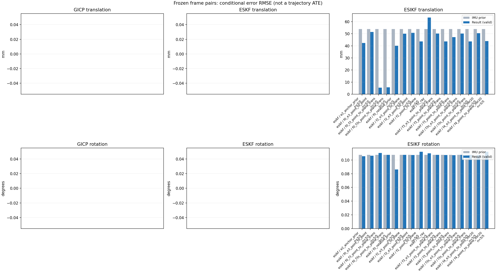

20261015_113028_roll_right · depth=disparity_cache · cache=aa97ce74e9d1640e30c6
模型视差：/home/ubuntu22/slam/SIO_SLAM/models/tensorrt/disp_896x448_fp16.plan；engine SHA256=604cf6ac1f705c877260711730dd5d2d58c2a21f3020c03c668401ef7fb1e768。输入为生产裁剪与光照处理后的 RGB 0..255；此实验使用原始浮点像素视差，不应用完整前端的邻域视差后处理。
原始 ONNX SHA256：e9f49736a65d68d06681add463866b6defdf78fdd7f4f50f6cc941b682fdc0bc。
代价体图改写验证：ONNX Runtime 固定随机特征输入，最大绝对误差 0；该项检查图改写，完整模型精度仍需由录制数据评估。
配准代码版本：744ac2d993ae629b0cc44a3b1d995e04ab4fad48；观测生成版本：744ac2d993ae629b0cc44a3b1d995e04ab4fad48。
固定图像对与纯 IMU 先验；ESKF 回放固定 GICP 观测，ESIKF 直接读取点云。真值只用于此报告。
同时查看 converged 与 solver_status：上游默认 Stereo 在 max_iter / stopped_at_minimum 时也可能置 converged=true。valid 表示输入检查通过，不表示精度提升。欧氏 GICP 未提供独立的点距 RMSE，该列显示 NaN。
误差按每对图像的锚点计算，单位 m / degrees。此处 RMSE 不是全序列 ATE；末帧受同一锚点条件约束。NIS 与条件马氏距离是诊断量，少量相关图像对不能用于宣称协方差已校准。
全部指标 CSV · R / P 矩阵 CSV · Stereo 求解逐轮 CSV · ESIKF 逐轮轨迹 CSV · 末轮 H / R / K_pose 矩阵 CSV · 配置快照 · 矢量图
unflagged 排除纯惯性先验平移误差超过 50 mm 的图像对；whitened 为误差按协方差白化后的每自由度均值，协方差与实际误差相符时约为 1。prior_whitened 用真值误差只检验先验 P；NIS 为 ESIKF 首轮 rᵀ(P+R)⁻¹r，不用真值，检验的是 P+R 的总量，单靠它分不开 P 与 R，偏差、错误对应和线性化误差也会抬高它。观测方差超过先验方差 1e+04 倍的方向视为不可观，从 NIS 及其自由度中去掉（nis_dof）。一致时 nis_per_dof 均值约 1、nis_over_chi2_median 中位数约 1；帧对少且共享序列，超出 95% 分位的比例只作参考。
| stage | method | variant | valid | total | result_translation_rmse_m | result_rotation_rmse_deg | result_translation_median_m | result_rotation_median_deg | result_translation_rmse_unflagged_m | result_rotation_rmse_unflagged_deg | improved_translation | improved_rotation | posterior_whitened_by_P_rot_mean | posterior_whitened_by_P_trans_mean | prior_whitened_by_P_rot_mean | prior_whitened_by_P_trans_mean | nis_per_dof_mean | nis_over_chi2_median_median | nis_exceeds_chi2_95_fraction |
|---|---|---|---|---|---|---|---|---|---|---|---|---|---|---|---|---|---|---|---|
| esikf | esikf | e2_anchor_prior | 5 | 5 | 0.042312 | 0.10553 | 0.0021475 | 0.022851 | 0.0036261 | 0.11743 | 4 | 2 | 785.57 | 7563.6 | 726.86 | 1027.6 | 42.221 | 3.6138 | 0.8 |
| esikf | esikf | f0_e3_point_to_point | 5 | 5 | 0.051368 | 0.10627 | 0.0016021 | 0.010927 | 0.0033945 | 0.11869 | 3 | 4 | 14.06 | 121.59 | 13.275 | 19.695 | 0.83947 | 0.034931 | 0.2 |
| esikf | esikf | f0_f3_point_to_plane_trans | 5 | 5 | 0.0054075 | 0.1102 | 0.0045417 | 0.054745 | 0.0044313 | 0.12013 | 2 | 3 | 22.074 | 15.767 | 13.275 | 19.695 | 17.198 | 0.50732 | 0.2 |
| esikf | esikf | f0_f3s_point_to_plane_trans | 5 | 5 | 0.0056555 | 0.10739 | 0.0045254 | 0.0094797 | 0.0044417 | 0.12005 | 2 | 0 | 13.275 | 17.464 | 13.275 | 19.695 | 17.198 | 0.50732 | 0.2 |
| esikf | esikf | f0_relative_prior | 5 | 5 | 0.040014 | 0.086116 | 0.002411 | 0.056263 | 0.0046664 | 0.092079 | 2 | 3 | 43.828 | 4511.3 | 13.275 | 19.695 | 31.207 | 2.8563 | 0.6 |
| esikf | esikf | f2_e3_point_to_plane | 5 | 5 | 0.050011 | 0.10753 | 0.0016329 | 0.012236 | 0.0042182 | 0.12006 | 5 | 1 | 729.11 | 1031.1 | 726.86 | 1027.6 | 4.1222 | 0.050829 | 0.2 |
| esikf | esikf | f2_e3_point_to_point | 5 | 5 | 0.050782 | 0.10722 | 0.0016344 | 0.0094628 | 0.0047176 | 0.11979 | 5 | 3 | 728.13 | 1115.7 | 726.86 | 1027.6 | 1.4912 | 0.035201 | 0.2 |
| esikf | esikf | f2_point_to_plane | 5 | 5 | 0.043689 | 0.11186 | 0.0026659 | 0.017825 | 0.0035173 | 0.12475 | 3 | 1 | 750.19 | 1214.6 | 726.86 | 1027.6 | 32.207 | 2.6652 | 0.8 |
| esikf | esikf | f2_ray | 5 | 5 | 0.063408 | 0.10967 | 0.0035081 | 0.053343 | 0.0079164 | 0.11968 | 1 | 2 | 875.12 | 1417.3 | 726.86 | 1027.6 | 40.466 | 2.6281 | 0.4 |
| esikf | esikf | f3_e3_point_to_plane_trans | 5 | 5 | 0.050152 | 0.10735 | 0.0016413 | 0.010839 | 0.0041227 | 0.1199 | 5 | 2 | 728.48 | 1028.5 | 726.86 | 1027.6 | 6.0181 | 0.1123 | 0.2 |
| esikf | esikf | f3_point_to_plane_trans | 5 | 5 | 0.043564 | 0.10719 | 0.0017535 | 0.014973 | 0.0026248 | 0.11961 | 2 | 2 | 740.29 | 1154.7 | 726.86 | 1027.6 | 92.736 | 1.7237 | 0.2 |
| esikf | esikf | f3_point_to_point_trans | 5 | 5 | 0.04724 | 0.10705 | 0.0055454 | 0.012704 | 0.0042079 | 0.11956 | 3 | 2 | 737.42 | 10224 | 726.86 | 1027.6 | 101.94 | 0.70413 | 0.2 |
| esikf | esikf | f3s_e3_point_to_plane_trans | 5 | 5 | 0.050156 | 0.10739 | 0.0016413 | 0.0094797 | 0.0041214 | 0.12005 | 5 | 0 | 726.86 | 1028.7 | 726.86 | 1027.6 | 6.0181 | 0.1123 | 0.2 |
| esikf | esikf | f3s_point_to_plane_trans | 5 | 5 | 0.043608 | 0.10739 | 0.0017519 | 0.0094797 | 0.0026509 | 0.12005 | 2 | 0 | 726.86 | 1159.7 | 726.86 | 1027.6 | 92.736 | 1.7237 | 0.2 |
| esikf | esikf | f4_e3_point_to_point_iter20 | 5 | 5 | 0.050484 | 0.10725 | 0.0016344 | 0.010524 | 0.0047176 | 0.11979 | 5 | 3 | 728.4 | 1115.3 | 726.86 | 1027.6 | 1.4912 | 0.035201 | 0.2 |
| esikf | esikf | f4_point_to_plane_iter20 | 5 | 5 | 0.043875 | 0.11189 | 0.0026659 | 0.018727 | 0.0035173 | 0.12475 | 3 | 1 | 751.91 | 1210.8 | 726.86 | 1027.6 | 32.207 | 2.6652 | 0.8 |

| stage | case | method | variant | status | solver_status | inliers | converged | covariance_convention | covariance_from_hessian | fitness | registration_rmse_m | prior_trans_error_m | result_trans_error_m | prior_rot_error_deg | result_rot_error_deg | prior_flagged | R_rot_trace_rad2 | R_pos_trace_m2 | nis_regularized | posterior_whitened_by_P_rot | posterior_whitened_by_P_trans | prior_whitened_by_P_rot | prior_whitened_by_P_trans | nis_per_dof | nis_dof |
|---|---|---|---|---|---|---|---|---|---|---|---|---|---|---|---|---|---|---|---|---|---|---|---|---|---|
| esikf | static_start | esikf | e2_anchor_prior | updated | converged | 9346 | 1 | 1 | 0 | 0 | 7.6181e-05 | 5.5908e-05 | 0.0061233 | 0.0064795 | 0 | 1.4895e-07 | 8.9459e-07 | nan | 0.76514 | 0.045334 | 0.33945 | 0.043416 | 0.13933 | 6 | |
| esikf | static_start | esikf | f0_relative_prior | updated | converged | 9346 | 1 | 1 | 0 | 0 | 7.6181e-05 | 0.00017348 | 0.0061233 | 0.0054834 | 0 | 1.4895e-07 | 8.9461e-07 | nan | 0.34072 | 0.089838 | 0.33932 | 0.019145 | 0.11512 | 6 | |
| esikf | static_start | esikf | f2_point_to_plane | updated | converged | 9346 | 1 | 1 | 0 | 0 | 7.6181e-05 | 0.00013601 | 0.0061233 | 0.0092155 | 0 | 1.5387e-06 | 5.0021e-06 | nan | 0.81902 | 0.12747 | 0.33945 | 0.043416 | 1.4064 | 6 | |
| esikf | static_start | esikf | f2_ray | updated | converged | 9346 | 1 | 1 | 0 | 0 | 7.6181e-05 | 8.1913e-05 | 0.0061233 | 0.0066607 | 0 | 0.060263 | 6.9153e-05 | nan | 0.40539 | 0.063335 | 0.33945 | 0.043416 | 2.0727 | 3 | |
| esikf | static_start | esikf | f3_point_to_point_trans | updated | converged | 9346 | 1 | 1 | 0 | 0 | 7.6181e-05 | 0.00014861 | 0.0061233 | 0.0074779 | 0 | 0.14895 | 8.9461e-07 | nan | 0.58136 | 0.26685 | 0.33945 | 0.043416 | 0.55532 | 3 | |
| esikf | static_start | esikf | f3_point_to_plane_trans | updated | converged | 9346 | 1 | 1 | 0 | 0 | 7.6181e-05 | 0.00013024 | 0.0061233 | 0.007124 | 0 | 1.5387 | 5.0021e-06 | nan | 0.46739 | 0.14232 | 0.33945 | 0.043416 | 2.0213 | 3 | |
| esikf | static_start | esikf | f0_f3_point_to_plane_trans | updated | converged | 9511 | 1 | 1 | 0 | 0 | 7.6181e-05 | 0.006377 | 0.0061233 | 0.0061211 | 0 | 1.4394 | 4.3581e-06 | nan | 0.33908 | 13.588 | 0.33932 | 0.019145 | 0.28846 | 3 | |
| esikf | static_start | esikf | f3s_point_to_plane_trans | updated | converged | 9346 | 1 | 1 | 0 | 0 | 7.6181e-05 | 0.00013022 | 0.0061233 | 0.0061233 | 0 | 1.5388 | 5.0021e-06 | nan | 0.33945 | 0.14228 | 0.33945 | 0.043416 | 2.0213 | 3 | |
| esikf | static_start | esikf | f0_f3s_point_to_plane_trans | updated | converged | 9511 | 1 | 1 | 0 | 0 | 7.6181e-05 | 0.006377 | 0.0061233 | 0.0061233 | 0 | 1.4394 | 4.3581e-06 | nan | 0.33932 | 13.588 | 0.33932 | 0.019145 | 0.28846 | 3 | |
| esikf | static_start | esikf | f4_point_to_plane_iter20 | updated | converged | 9346 | 1 | 1 | 0 | 0 | 7.6181e-05 | 0.00013601 | 0.0061233 | 0.0092155 | 0 | 1.5387e-06 | 5.0021e-06 | nan | 0.81902 | 0.12747 | 0.33945 | 0.043416 | 1.4064 | 6 | |
| esikf | static_start | esikf | f2_e3_point_to_point | updated | converged | 9346 | 1 | 1 | 0 | 0 | 7.6181e-05 | 7.4374e-05 | 0.0061233 | 0.0061431 | 0 | 1.6563e-05 | 7.4412e-05 | nan | 0.34508 | 0.042433 | 0.33945 | 0.043416 | 0.0022204 | 6 | |
| esikf | static_start | esikf | f0_e3_point_to_point | updated | converged | 9346 | 1 | 1 | 0 | 0 | 7.6181e-05 | 0.00015923 | 0.0061233 | 0.0061106 | 0 | 1.6563e-05 | 7.4414e-05 | nan | 0.33874 | 0.020196 | 0.33932 | 0.019145 | 0.0014897 | 6 | |
| esikf | static_start | esikf | f2_e3_point_to_plane | updated | converged | 9346 | 1 | 1 | 0 | 0 | 7.6181e-05 | 7.3158e-05 | 0.0061233 | 0.0061821 | 0 | 8.9911e-05 | 0.00017968 | nan | 0.34631 | 0.04134 | 0.33945 | 0.043416 | 0.044236 | 5 | |
| esikf | static_start | esikf | f3_e3_point_to_plane_trans | updated | converged | 9346 | 1 | 1 | 0 | 0 | 7.6181e-05 | 7.4207e-05 | 0.0061233 | 0.0061369 | 0 | 1.5388 | 0.00017968 | nan | 0.34099 | 0.042512 | 0.33945 | 0.043416 | 0.059898 | 3 | |
| esikf | static_start | esikf | f3s_e3_point_to_plane_trans | updated | converged | 9346 | 1 | 1 | 0 | 0 | 7.6181e-05 | 7.4207e-05 | 0.0061233 | 0.0061233 | 0 | 1.5388 | 0.00017968 | nan | 0.33945 | 0.042512 | 0.33945 | 0.043416 | 0.059898 | 3 | |
| esikf | static_start | esikf | f4_e3_point_to_point_iter20 | updated | converged | 9346 | 1 | 1 | 0 | 0 | 7.6181e-05 | 7.4374e-05 | 0.0061233 | 0.0061431 | 0 | 1.6563e-05 | 7.4412e-05 | nan | 0.34508 | 0.042433 | 0.33945 | 0.043416 | 0.0022204 | 6 | |
| esikf | sync_motion | esikf | e2_anchor_prior | updated_not_converged | max_iterations | 9646 | 0 | 1 | 0 | 0 | 0.00070607 | 0.0021475 | 0.0094797 | 0.014813 | 0 | 1.4793e-07 | 8.7216e-07 | nan | 19.494 | 15.341 | 4.3275 | 0.10972 | 3.6821 | 6 | |
| esikf | sync_motion | esikf | f0_relative_prior | updated_not_converged | max_iterations | 9650 | 0 | 1 | 0 | 0 | 0.00070607 | 0.002411 | 0.0094797 | 0.022252 | 0 | 1.4766e-07 | 8.6884e-07 | nan | 6.1682 | 16.664 | 0.7653 | 0.043296 | 3.466 | 6 | |
| esikf | sync_motion | esikf | f2_point_to_plane | updated | converged | 9589 | 1 | 1 | 0 | 0 | 0.00070607 | 0.0026659 | 0.0094797 | 0.012565 | 0 | 1.4091e-06 | 5.0141e-06 | nan | 14.915 | 3.0187 | 4.3275 | 0.10972 | 2.3756 | 6 | |
| esikf | sync_motion | esikf | f2_ray | updated | converged | 9588 | 1 | 1 | 0 | 0 | 0.00070607 | 0.0035081 | 0.0094797 | 0.011519 | 0 | 0.026823 | 2.5129e-05 | nan | 16.372 | 3.7516 | 4.3275 | 0.10972 | 1.8161 | 3 | |
| esikf | sync_motion | esikf | f3_point_to_point_trans | updated_not_converged | max_iterations | 9655 | 0 | 1 | 0 | 0 | 0.00070607 | 0.0061722 | 0.0094797 | 0.012704 | 0 | 0.14672 | 8.4227e-07 | nan | 25.826 | 198.38 | 4.3275 | 0.10972 | 0.96662 | 3 | |
| esikf | sync_motion | esikf | f3_point_to_plane_trans | updated_not_converged | max_iterations | 9603 | 0 | 1 | 0 | 0 | 0.00070607 | 0.00089747 | 0.0094797 | 0.010773 | 0 | 1.3783 | 4.8298e-06 | nan | 14.217 | 0.69032 | 4.3275 | 0.10972 | 1.3595 | 3 | |
| esikf | sync_motion | esikf | f0_f3_point_to_plane_trans | updated | converged | 9665 | 1 | 1 | 0 | 0 | 0.00070607 | 0.0030511 | 0.0094797 | 0.0094644 | 0 | 1.3286 | 4.4846e-06 | nan | 0.76441 | 3.5792 | 0.7653 | 0.043296 | 1.2182 | 3 | |
| esikf | sync_motion | esikf | f3s_point_to_plane_trans | updated | converged | 9601 | 1 | 1 | 0 | 0 | 0.00070607 | 0.00089838 | 0.0094797 | 0.0094797 | 0 | 1.3849 | 4.8818e-06 | nan | 4.3275 | 0.69222 | 4.3275 | 0.10972 | 1.3595 | 3 | |
| esikf | sync_motion | esikf | f0_f3s_point_to_plane_trans | updated | converged | 9666 | 1 | 1 | 0 | 0 | 0.00070607 | 0.0030357 | 0.0094797 | 0.0094797 | 0 | 1.3283 | 4.4837e-06 | nan | 0.7653 | 3.5491 | 0.7653 | 0.043296 | 1.2182 | 3 | |
| esikf | sync_motion | esikf | f4_point_to_plane_iter20 | updated | converged | 9589 | 1 | 1 | 0 | 0 | 0.00070607 | 0.0026659 | 0.0094797 | 0.012565 | 0 | 1.4091e-06 | 5.0141e-06 | nan | 14.915 | 3.0187 | 4.3275 | 0.10972 | 2.3756 | 6 | |
| esikf | sync_motion | esikf | f2_e3_point_to_point | updated | converged | 9601 | 1 | 1 | 0 | 0 | 0.00070607 | 0.00063928 | 0.0094797 | 0.0094628 | 0 | 1.6731e-05 | 7.3979e-05 | nan | 4.7464 | 0.11355 | 4.3275 | 0.10972 | 0.039586 | 5 | |
| esikf | sync_motion | esikf | f0_e3_point_to_point | updated_not_converged | max_iterations | 9607 | 0 | 1 | 0 | 0 | 0.00070607 | 0.0012226 | 0.0094797 | 0.0094656 | 0 | 1.6703e-05 | 7.4035e-05 | nan | 0.77112 | 0.084056 | 0.7653 | 0.043296 | 0.039834 | 6 | |
| esikf | sync_motion | esikf | f2_e3_point_to_plane | updated | converged | 9601 | 1 | 1 | 0 | 0 | 0.00070607 | 0.00067234 | 0.0094797 | 0.0096302 | 0 | 8.1331e-05 | 0.00017805 | nan | 4.9147 | 0.1062 | 4.3275 | 0.10972 | 0.041434 | 4 | |
| esikf | sync_motion | esikf | f3_e3_point_to_plane_trans | updated | converged | 9601 | 1 | 1 | 0 | 0 | 0.00070607 | 0.00058075 | 0.0094797 | 0.0095975 | 0 | 1.3922 | 0.00017796 | nan | 4.9079 | 0.081555 | 4.3275 | 0.10972 | 0.071664 | 3 | |
| esikf | sync_motion | esikf | f3s_e3_point_to_plane_trans | updated | converged | 9600 | 1 | 1 | 0 | 0 | 0.00070607 | 0.00058028 | 0.0094797 | 0.0094797 | 0 | 1.3924 | 0.00017797 | nan | 4.3275 | 0.081504 | 4.3275 | 0.10972 | 0.071664 | 3 | |
| esikf | sync_motion | esikf | f4_e3_point_to_point_iter20 | updated | converged | 9601 | 1 | 1 | 0 | 0 | 0.00070607 | 0.00063928 | 0.0094797 | 0.0094628 | 0 | 1.6731e-05 | 7.3979e-05 | nan | 4.7464 | 0.11355 | 4.3275 | 0.10972 | 0.039586 | 5 | |
| esikf | main_motion | esikf | e2_anchor_prior | updated | converged | 12074 | 1 | 1 | 0 | 0 | 0.001643 | 0.001562 | 0.075969 | 0.075716 | 0 | 1.1841e-07 | 8.6797e-07 | nan | 1718.4 | 8.1501 | 1710.8 | 1.9391 | 3.2212 | 6 | |
| esikf | main_motion | esikf | f0_relative_prior | updated_not_converged | max_iterations | 12080 | 0 | 1 | 0 | 0 | 0.001643 | 0.0022546 | 0.075969 | 0.066311 | 0 | 1.1811e-07 | 8.6201e-07 | nan | 57.072 | 12.943 | 52.135 | 0.021926 | 2.546 | 6 | |
| esikf | main_motion | esikf | f2_point_to_plane | updated | converged | 12063 | 1 | 1 | 0 | 0 | 0.001643 | 0.0014016 | 0.075969 | 0.075847 | 0 | 1.2085e-06 | 5.0011e-06 | nan | 1708 | 2.8213 | 1710.8 | 1.9391 | 2.1742 | 6 | |
| esikf | main_motion | esikf | f2_ray | updated | converged | 12067 | 1 | 1 | 0 | 0 | 0.001643 | 0.001371 | 0.075969 | 0.075965 | 0 | 0.0234 | 2.5745e-05 | nan | 1710.8 | 2.3432 | 1710.8 | 1.9391 | 0.5569 | 3 | |
| esikf | main_motion | esikf | f3_point_to_point_trans | updated | converged | 12062 | 1 | 1 | 0 | 0 | 0.001643 | 0.0013981 | 0.075969 | 0.075968 | 0 | 0.12009 | 8.9565e-07 | nan | 1711.3 | 5.003 | 1710.8 | 1.9391 | 0.038413 | 3 | |
| esikf | main_motion | esikf | f3_point_to_plane_trans | updated | converged | 12065 | 1 | 1 | 0 | 0 | 0.001643 | 0.0017535 | 0.075969 | 0.075967 | 0 | 1.2087 | 5.0164e-06 | nan | 1711 | 5.0867 | 1710.8 | 1.9391 | 1.3493 | 3 | |
| esikf | main_motion | esikf | f0_f3_point_to_plane_trans | updated_not_converged | max_iterations | 12064 | 0 | 1 | 0 | 0 | 0.001643 | 0.0028185 | 0.075969 | 0.075922 | 0 | 1.2081 | 4.9181e-06 | nan | 52.994 | 5.3788 | 52.135 | 0.021926 | 0.40011 | 3 | |
| esikf | main_motion | esikf | f3s_point_to_plane_trans | updated | converged | 12065 | 1 | 1 | 0 | 0 | 0.001643 | 0.0017519 | 0.075969 | 0.075969 | 0 | 1.2085 | 5.016e-06 | nan | 1710.8 | 5.0839 | 1710.8 | 1.9391 | 1.3493 | 3 | |
| esikf | main_motion | esikf | f0_f3s_point_to_plane_trans | updated | converged | 12064 | 1 | 1 | 0 | 0 | 0.001643 | 0.0029248 | 0.075969 | 0.075969 | 0 | 1.2096 | 4.9305e-06 | nan | 52.135 | 5.6586 | 52.135 | 0.021926 | 0.40011 | 3 | |
| esikf | main_motion | esikf | f4_point_to_plane_iter20 | updated | converged | 12063 | 1 | 1 | 0 | 0 | 0.001643 | 0.0014016 | 0.075969 | 0.075847 | 0 | 1.2085e-06 | 5.0011e-06 | nan | 1708 | 2.8213 | 1710.8 | 1.9391 | 2.1742 | 6 | |
| esikf | main_motion | esikf | f2_e3_point_to_point | updated | converged | 12070 | 1 | 1 | 0 | 0 | 0.001643 | 0.0016344 | 0.075969 | 0.075967 | 0 | 1.3291e-05 | 7.3824e-05 | nan | 1711 | 1.9701 | 1710.8 | 1.9391 | 0.024671 | 5 | |
| esikf | main_motion | esikf | f0_e3_point_to_point | updated | converged | 12057 | 1 | 1 | 0 | 0 | 0.001643 | 0.0016021 | 0.075969 | 0.075897 | 0 | 1.3321e-05 | 7.3937e-05 | nan | 53.221 | 0.16034 | 52.135 | 0.021926 | 0.031136 | 6 | |
| esikf | main_motion | esikf | f2_e3_point_to_plane | updated | converged | 12070 | 1 | 1 | 0 | 0 | 0.001643 | 0.0016329 | 0.075969 | 0.075966 | 0 | 7.0909e-05 | 0.00018135 | nan | 1710.8 | 1.9608 | 1710.8 | 1.9391 | 0.025981 | 4 | |
| esikf | main_motion | esikf | f3_e3_point_to_plane_trans | updated | converged | 12070 | 1 | 1 | 0 | 0 | 0.001643 | 0.0016413 | 0.075969 | 0.075969 | 0 | 1.2136 | 0.00018135 | nan | 1710.9 | 1.9826 | 1710.8 | 1.9391 | 0.088564 | 3 | |
| esikf | main_motion | esikf | f3s_e3_point_to_plane_trans | updated | converged | 12070 | 1 | 1 | 0 | 0 | 0.001643 | 0.0016413 | 0.075969 | 0.075969 | 0 | 1.2136 | 0.00018135 | nan | 1710.8 | 1.9826 | 1710.8 | 1.9391 | 0.088564 | 3 | |
| esikf | main_motion | esikf | f4_e3_point_to_point_iter20 | updated | converged | 12070 | 1 | 1 | 0 | 0 | 0.001643 | 0.0016344 | 0.075969 | 0.075967 | 0 | 1.3291e-05 | 7.3824e-05 | nan | 1711 | 1.9701 | 1710.8 | 1.9391 | 0.024671 | 5 | |
| esikf | main_motion_long | esikf | e2_anchor_prior | updated | converged | 12226 | 1 | 1 | 0 | 0 | 0.0098867 | 0.0067483 | 0.22748 | 0.22172 | 0 | 1.304e-07 | 9.4099e-07 | nan | 2043.6 | 69.803 | 1913.5 | 1.8817 | 2.6469 | 6 | |
| esikf | main_motion_long | esikf | f0_relative_prior | updated_not_converged | max_iterations | 12269 | 0 | 1 | 0 | 0 | 0.0098867 | 0.0087279 | 0.22748 | 0.17027 | 0 | 1.2835e-07 | 9.222e-07 | nan | 102.84 | 92.288 | 12.947 | 0.033962 | 0.31939 | 6 | |
| esikf | main_motion_long | esikf | f2_point_to_plane | updated | converged | 12290 | 1 | 1 | 0 | 0 | 0.0098867 | 0.0063558 | 0.22748 | 0.23718 | 0 | 1.2797e-06 | 4.847e-06 | nan | 1940.6 | 26.411 | 1913.5 | 1.8817 | 7.4737 | 6 | |
| esikf | main_motion_long | esikf | f2_ray | updated_not_converged | max_iterations | 12324 | 0 | 1 | 0 | 0 | 0.0098867 | 0.015378 | 0.22748 | 0.2266 | 0 | 0.0091632 | 1.0071e-05 | nan | 1919.5 | 72.886 | 1913.5 | 1.8817 | 5.5228 | 4 | |
| esikf | main_motion_long | esikf | f3_point_to_point_trans | updated_not_converged | max_iterations | 12228 | 0 | 1 | 0 | 0 | 0.0098867 | 0.0055454 | 0.22748 | 0.22625 | 0 | 0.12992 | 9.2587e-07 | nan | 1915.4 | 117.35 | 1913.5 | 1.8817 | 0.12149 | 3 | |
| esikf | main_motion_long | esikf | f3_point_to_plane_trans | updated | converged | 12221 | 1 | 1 | 0 | 0 | 0.0098867 | 0.0048642 | 0.22748 | 0.22647 | 0 | 1.2936 | 4.8943e-06 | nan | 1914.5 | 13.318 | 1913.5 | 1.8817 | 0.45261 | 3 | |
| esikf | main_motion_long | esikf | f0_f3_point_to_plane_trans | updated | converged | 12216 | 1 | 1 | 0 | 0 | 0.0098867 | 0.0045417 | 0.22748 | 0.22767 | 0 | 1.2923 | 4.8892e-06 | nan | 13.242 | 11.334 | 12.947 | 0.033962 | 0.1065 | 3 | |
| esikf | main_motion_long | esikf | f3s_point_to_plane_trans | updated_not_converged | max_iterations | 12219 | 0 | 1 | 0 | 0 | 0.0098867 | 0.0049209 | 0.22748 | 0.22748 | 0 | 1.2932 | 4.913e-06 | nan | 1913.5 | 13.455 | 1913.5 | 1.8817 | 0.45261 | 3 | |
| esikf | main_motion_long | esikf | f0_f3s_point_to_plane_trans | updated_not_converged | max_iterations | 12216 | 0 | 1 | 0 | 0 | 0.0098867 | 0.0045254 | 0.22748 | 0.22748 | 0 | 1.2923 | 4.8942e-06 | nan | 12.947 | 11.262 | 12.947 | 0.033962 | 0.1065 | 3 | |
| esikf | main_motion_long | esikf | f4_point_to_plane_iter20 | updated | converged | 12290 | 1 | 1 | 0 | 0 | 0.0098867 | 0.0063558 | 0.22748 | 0.23718 | 0 | 1.2797e-06 | 4.847e-06 | nan | 1940.6 | 26.411 | 1913.5 | 1.8817 | 7.4737 | 6 | |
| esikf | main_motion_long | esikf | f2_e3_point_to_point | updated | converged | 12256 | 1 | 1 | 0 | 0 | 0.0098867 | 0.0092703 | 0.22748 | 0.22695 | 0 | 1.4392e-05 | 7.7468e-05 | nan | 1916.1 | 3.313 | 1913.5 | 1.8817 | 0.031377 | 6 | |
| esikf | main_motion_long | esikf | f0_e3_point_to_point | updated | converged | 12221 | 1 | 1 | 0 | 0 | 0.0098867 | 0.0064809 | 0.22748 | 0.22464 | 0 | 1.4474e-05 | 7.7827e-05 | nan | 14.689 | 1.2063 | 12.947 | 0.033962 | 0.023526 | 6 | |
| esikf | main_motion_long | esikf | f2_e3_point_to_plane | updated | converged | 12246 | 1 | 1 | 0 | 0 | 0.0098867 | 0.0082491 | 0.22748 | 0.2275 | 0 | 7.449e-05 | 0.00017221 | nan | 1914.3 | 2.5007 | 1913.5 | 1.8817 | 0.17085 | 6 | |
| esikf | main_motion_long | esikf | f3_e3_point_to_plane_trans | updated | converged | 12242 | 1 | 1 | 0 | 0 | 0.0098867 | 0.0080591 | 0.22748 | 0.22717 | 0 | 1.2728 | 0.00016978 | nan | 1913.9 | 2.2409 | 1913.5 | 1.8817 | 0.27742 | 3 | |
| esikf | main_motion_long | esikf | f3s_e3_point_to_plane_trans | updated | converged | 12242 | 1 | 1 | 0 | 0 | 0.0098867 | 0.0080566 | 0.22748 | 0.22748 | 0 | 1.2751 | 0.00016971 | nan | 1913.5 | 2.239 | 1913.5 | 1.8817 | 0.27742 | 3 | |
| esikf | main_motion_long | esikf | f4_e3_point_to_point_iter20 | updated | converged | 12256 | 1 | 1 | 0 | 0 | 0.0098867 | 0.0092703 | 0.22748 | 0.22695 | 0 | 1.4392e-05 | 7.7468e-05 | nan | 1916.1 | 3.313 | 1913.5 | 1.8817 | 0.031377 | 6 | |
| esikf | static_end | esikf | e2_anchor_prior | updated_not_converged | max_iterations | 8996 | 0 | 1 | 0 | 0 | 0.1201 | 0.094334 | 0.0045728 | 0.022851 | 1 | 2.0322e-07 | 1.4606e-06 | nan | 145.64 | 37725 | 5.3279 | 5134.1 | 201.41 | 6 | |
| esikf | static_end | esikf | f0_relative_prior | updated_not_converged | max_iterations | 9086 | 0 | 1 | 0 | 0 | 0.1201 | 0.088985 | 0.0045728 | 0.056263 | 1 | 1.7864e-07 | 1.0896e-06 | nan | 52.715 | 22434 | 0.1892 | 98.359 | 149.59 | 6 | |
| esikf | static_end | esikf | f2_point_to_plane | updated_not_converged | max_iterations | 9050 | 0 | 1 | 0 | 0 | 0.1201 | 0.097438 | 0.0045728 | 0.017825 | 1 | 1.8357e-06 | 6.4525e-06 | nan | 86.671 | 6040.7 | 5.3279 | 5134.1 | 147.61 | 6 | |
| esikf | static_end | esikf | f2_ray | updated_not_converged | max_iterations | 8372 | 0 | 1 | 0 | 0 | 0.1201 | 0.1409 | 0.0045728 | 0.053343 | 1 | 0.0043444 | 7.3531e-05 | nan | 728.53 | 7007.5 | 5.3279 | 5134.1 | 192.36 | 3 | |
| esikf | static_end | esikf | f3_point_to_point_trans | updated_not_converged | max_iterations | 8951 | 0 | 1 | 0 | 0 | 0.1201 | 0.1053 | 0.0045728 | 0.010996 | 1 | 0.19236 | 1.2246e-06 | nan | 33.981 | 50801 | 5.3279 | 5134.1 | 508.04 | 3 | |
| esikf | static_end | esikf | f3_point_to_plane_trans | updated_not_converged | max_iterations | 9060 | 0 | 1 | 0 | 0 | 0.1201 | 0.097271 | 0.0045728 | 0.014973 | 1 | 1.8496 | 6.6606e-06 | nan | 61.344 | 5754.2 | 5.3279 | 5134.1 | 458.5 | 3 | |
| esikf | static_end | esikf | f0_f3_point_to_plane_trans | updated_not_converged | max_iterations | 9053 | 0 | 1 | 0 | 0 | 0.1201 | 0.0082255 | 0.0045728 | 0.054745 | 1 | 1.6185 | 4.3325e-06 | nan | 43.03 | 44.956 | 0.1892 | 98.359 | 83.977 | 3 | |
| esikf | static_end | esikf | f3s_point_to_plane_trans | updated_not_converged | max_iterations | 9060 | 0 | 1 | 0 | 0 | 0.1201 | 0.097365 | 0.0045728 | 0.0045728 | 1 | 1.8447 | 6.6492e-06 | nan | 5.3279 | 5778.9 | 5.3279 | 5134.1 | 458.5 | 3 | |
| esikf | static_end | esikf | f0_f3s_point_to_plane_trans | updated_not_converged | max_iterations | 9053 | 0 | 1 | 0 | 0 | 0.1201 | 0.0090003 | 0.0045728 | 0.0045728 | 1 | 1.5917 | 4.2695e-06 | nan | 0.1892 | 53.263 | 0.1892 | 98.359 | 83.977 | 3 | |
| esikf | static_end | esikf | f4_point_to_plane_iter20 | updated_not_converged | max_iterations | 9017 | 0 | 1 | 0 | 0 | 0.1201 | 0.097855 | 0.0045728 | 0.018727 | 1 | 1.8391e-06 | 6.6486e-06 | nan | 95.281 | 6021.6 | 5.3279 | 5134.1 | 147.61 | 6 | |
| esikf | static_end | esikf | f2_e3_point_to_point | updated_not_converged | max_iterations | 8994 | 0 | 1 | 0 | 0 | 0.1201 | 0.11316 | 0.0045728 | 0.0091123 | 1 | 2.5598e-05 | 0.00014238 | nan | 8.424 | 5572.9 | 5.3279 | 5134.1 | 7.3582 | 3 | |
| esikf | static_end | esikf | f0_e3_point_to_point | updated_not_converged | max_iterations | 8924 | 0 | 1 | 0 | 0 | 0.1201 | 0.11466 | 0.0045728 | 0.010927 | 1 | 2.4119e-05 | 0.00012645 | nan | 1.2796 | 606.5 | 0.1892 | 98.359 | 4.1013 | 6 | |
| esikf | static_end | esikf | f2_e3_point_to_plane | updated_not_converged | max_iterations | 8997 | 0 | 1 | 0 | 0 | 0.1201 | 0.11151 | 0.0045728 | 0.012236 | 1 | 0.00011658 | 0.00027129 | nan | 15.231 | 5150.8 | 5.3279 | 5134.1 | 20.328 | 3 | |
| esikf | static_end | esikf | f3_e3_point_to_plane_trans | updated_not_converged | max_iterations | 8990 | 0 | 1 | 0 | 0 | 0.1201 | 0.11184 | 0.0045728 | 0.010839 | 1 | 2.0229 | 0.00027818 | nan | 12.435 | 5138 | 5.3279 | 5134.1 | 29.593 | 3 | |
| esikf | static_end | esikf | f3s_e3_point_to_plane_trans | updated_not_converged | max_iterations | 8995 | 0 | 1 | 0 | 0 | 0.1201 | 0.11185 | 0.0045728 | 0.0045728 | 1 | 2.0116 | 0.00027937 | nan | 5.3279 | 5138.9 | 5.3279 | 5134.1 | 29.593 | 3 | |
| esikf | static_end | esikf | f4_e3_point_to_point_iter20 | updated | converged | 8972 | 1 | 1 | 0 | 0 | 0.1201 | 0.11249 | 0.0045728 | 0.010524 | 1 | 2.5556e-05 | 0.00014149 | nan | 9.7672 | 5570.8 | 5.3279 | 5134.1 | 7.3582 | 3 |